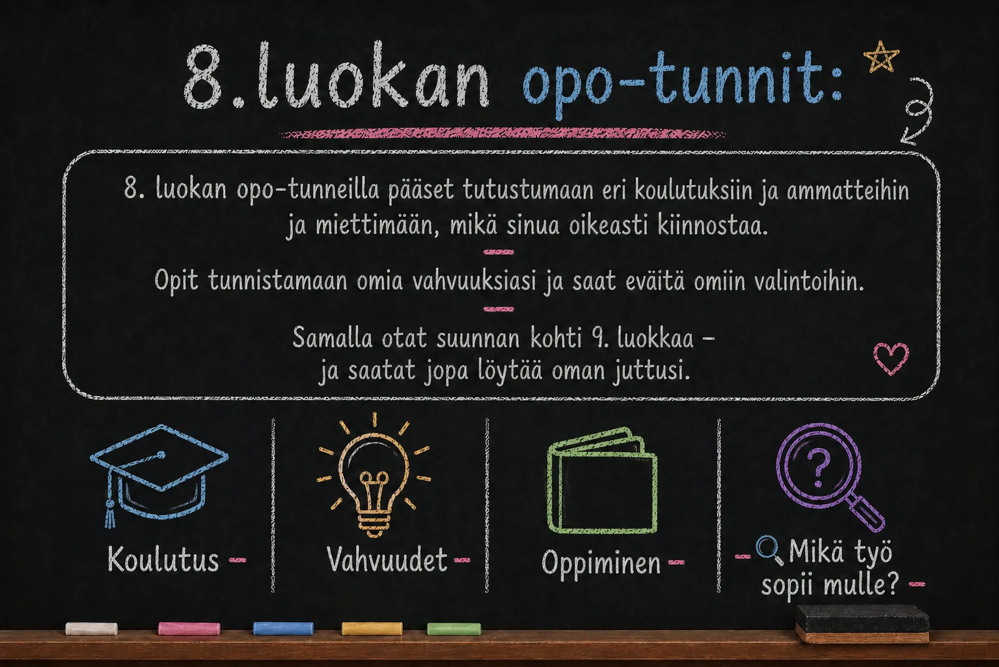
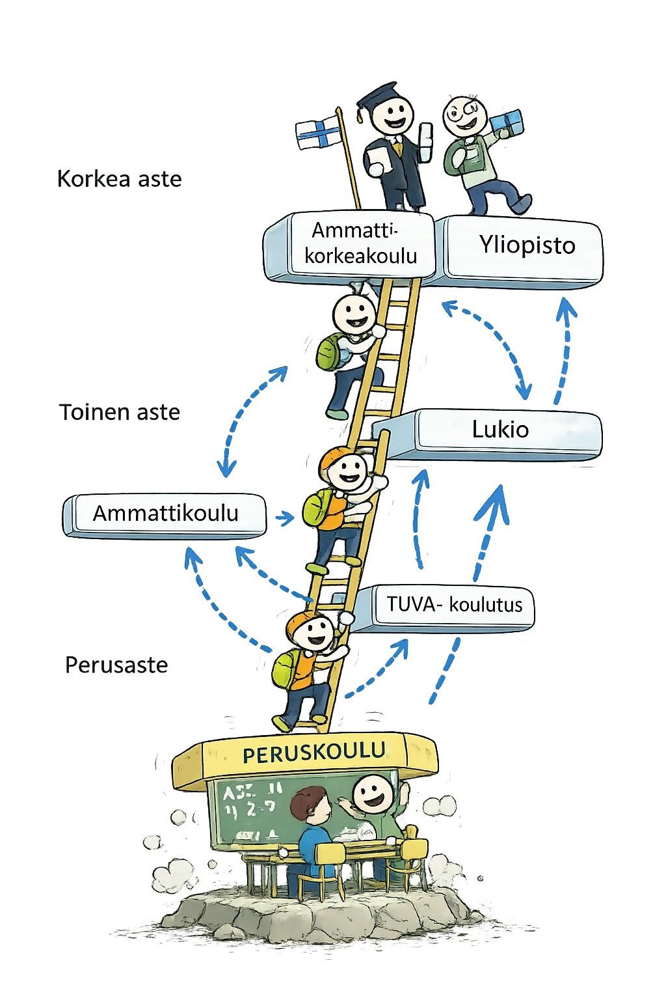
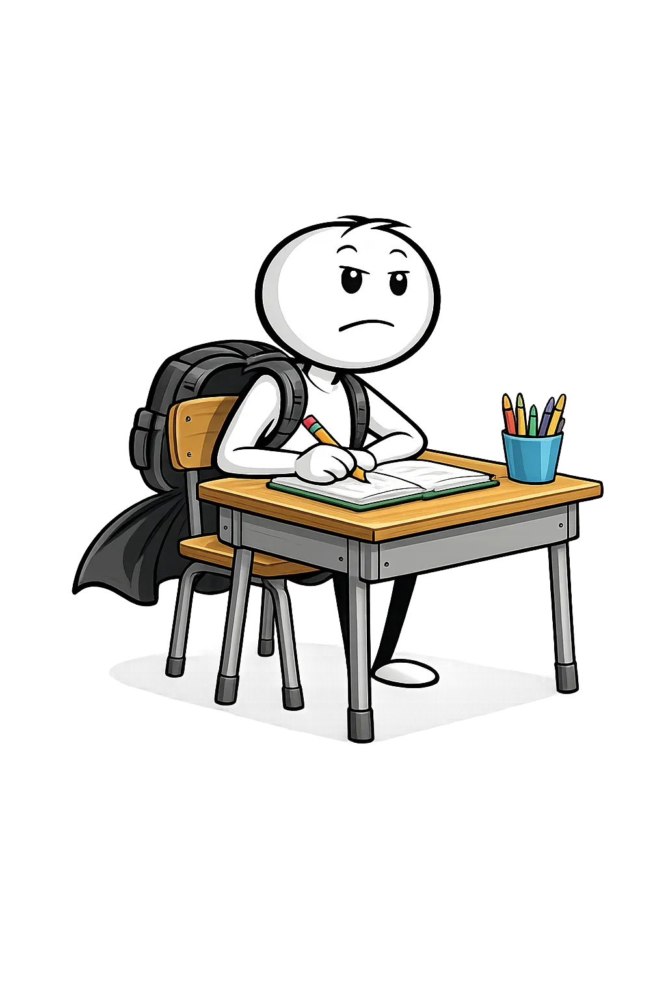
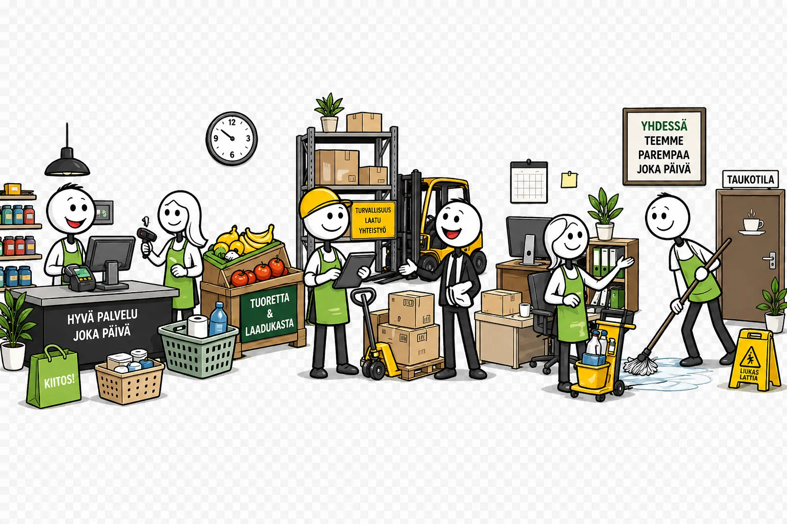

Tänä vuonna tutustut koulutusaloihin ja alat hahmottaa, mikä sinua kiinnostaa — ja miksi.
Ei tarvitse tietää vielä. Mutta tänä vuonna suunta alkaa löytyä.

Suurenna
Opon infotaulu
Aikataulu on tulossa.
Rupatteluhetki
Kysymyskortit tutustumiseen ja ryhmäytymiseen – rentoa juttelua yhdessä
Tutustumispeli
Kysymyskortit
Juttele kavereiden kanssa ja tutustukaa rennosti. Nostakaa
kysymyskortteja ja vastatkaa vuorotellen – mukana hauskoja, rentoja
ja vähän syvempiäkin kysymyksiä.
Suomessa voit valita erilaisia polkuja peruskoulun jälkeen.
Lukio, ammatillinen koulutus ja muut vaihtoehdot tarjoavat eri
tapoja oppia ja kehittyä.
Ei ole vain yhtä oikeaa reittiä.
Tiedätkö jo, haluatko enemmän oppia tekemällä vai lukemalla laajasti eri aineita?

Lukio
3 vuotta
Opiskelet laajasti eri aineita ja kirjoitat ylioppilaaksi. Ammatin saat vasta jatko-opinnoissa.
Ammattikoulu
Ammatti
Opit tekemällä oikeita työtehtäviä ja pääset nopeasti työelämään. Voit myös jatkaa opiskelua korkeakoulussa, useimmiten ammattikorkeakoulussa.
Kaksoistutkinto
3–4 vuotta
Ammatti ja ylioppilastutkinto yhtä aikaa. Vaatii vähän enemmän, mutta avaa tien AMK:hon ja yliopistoon.
TUVA
1 vuosi
Valmentava koulutus, jos et vielä tiedä suuntaa tai haluat nostaa arvosanoja. Kestää enintään vuoden. Sen jälkeen haet lukioon tai amikseen.
Tutustu koulutusaloihin
Klikkaa kuvaa suurentaaksesi sen koko näytölle.
Parin kanssa
Tasa-arvo työelämässä: onko alalla enemmän miehiä vai naisia?
Tekniikka, hoitoala vai palvelut – kuinka moni opiskelija on nainen? Arvaa ensin. Sitten näet oikeat luvut ja voit verrata.
🔧? %🩺? %🍳? %
Arvaa, kuinka suuri osa ammatillisen koulutuksen opiskelijoista on naisia. Siirrä liukua ja paina Tarkista.
Mitä luvut kertovat?
Joillain aloilla jako on jyrkkä, toisilla melkein tasan. Luvut kertovat tottumuksista. Ne eivät kerro, kuka alalle sopii. Jokainen ala on avoin kaikille.
Mieti omia kiinnostuksen kohteitasi: jätätkö jonkin alan pois, koska se ei kiinnosta – vai koska se ei tunnu ”sinunlaistesi” alalta?
Löysitkö kiinnostavan alan? Tutustu tutkintoihin ja lukion painotuksiin — ja valitse Amispolku tai Lukiopolku.
Oma reitti löytyy tutkimalla
Tutki ennen kuin valitset — voit tutkia molempia polkuja
Ammatillisessa koulutuksessa opit tekemällä. Valitse kiinnostava aihe ja katso, mitä tutkintoja on tarjolla.
Jokainen etenee omaan tahtiinsa. Tässä on tavallinen kolmen vuoden polku.
1
1. vuosi
Opit alan perusteet
Teet opon tai opettajan kanssa oman suunnitelman (HOKS). Siihen kirjataan, mitä opiskelet ja missä järjestyksessä.
Opettelet alan perustyöt, työvälineet ja työturvallisuuden.
Opiskelet yhteisiä aineita eli YTO-aineita: äidinkieltä, ruotsia, englantia, matikkaa sekä yhteiskunta- ja työelämätaitoja.
Jos valitsit kaksoistutkinnon, aloitat lukio-opinnot amiksen rinnalla.
Opinnot käynnissä
2
2. vuosi
Erikoistut ja opit työpaikalla
Valitset, mihin alan tehtäviin erikoistut. Esimerkiksi kokki voi syventyä ravintolatyöhön tai suurkeittiöön.
Olet pidempiä jaksoja työpaikalla. Koulutussopimuksella opit ilman palkkaa, oppisopimuksella saat palkkaa.
Näytät osaamisesi näytöissä: teet oikeita työtehtäviä, ja ne arvioidaan.
Kaksoistutkinnossa lukio-opinnot jatkuvat ja yo-kirjoitukset lähestyvät.
Taidot kasvavat
3
3. vuosi
Valmistut ja katsot eteenpäin
Teet viimeiset näytöt ja tutkinnon osat.
Kaksoistutkinnossa kirjoitat ylioppilaaksi: vähintään viisi koetta. Opiskelu voi jatkua neljännelle vuodelle.
Haet töihin tai jatko-opintoihin, esimerkiksi ammattikorkeakouluun.
Valmistut, kun koko tutkinnon osaaminen on näytetty. Se voi tapahtua myös kesken lukuvuotta.
Ammatillinen perustutkinto
Amiksen lopussa: ammatillinen perustutkinto → töihin, jatko-opintoihin tai lisää osaamista ammattitutkinnolla
Mitä teet tässä tehtävässä?
Valitset sinua kiinnostavat asiat ja löydät sopivia ammatteja ja tutkintoja (Vaihe 1)
Kurkistat valittuun alaan ja teet oman alasi tehtävän (Vaihe 2)
Arvaat, mikä amiksesta on totta, ja teet oman amispolkusi (Vaihe 3)
1
Valitse kiinnostavat asiat
2
Kurkista alaan ja tee tehtävä
3
Totta vai tarua & oma amispolku
Vaihe 1Valitse sinua kiinnostavat asiat
Ei tarvitse vielä tietää aloista mitään — valitse vain, mikä kuulostaa kivalta. Voit valita useita. Näytämme sinulle sopivia ammatteja ja tutkintoja.
Valitse yltä, mikä sinua kiinnostaa — näytämme sinulle sopivat ammatit.
Ei tuloksia valituilla kiinnostuksilla.
Vaihe 2Kurkista valittuun alaan ja tee tehtävä
Kun olet valinnut kiinnostuksen, tee alan tehtävä. Tarkista ajankohtaiset tiedot Opintopolku.fi-sivuilta.
Valitse Vaihe 1:ssä jokin kiinnostava ala — sopiva alan tarina ilmestyy tähän automaattisesti.
Vaihe 3Totta vai tarua & oma amispolku
Mitä sinä luulet amiksesta? Arvaa ensin, sitten näet, miten asia oikeasti on. Lopuksi teet oman amispolkusi.
Osa 1 Totta vai tarua?
Lue väite. Valitse, onko se mielestäsi totta vai tarua. Sen jälkeen näet, miten asia oikeasti on.
Erityisammattioppilaitokset
Jos tarvitset enemmän tukea opiskelussa, erityisammattioppilaitokset tarjoavat saman ammatillisen koulutuksen — pienemmissä ryhmissä ja yksilöllisemmin. Haetaan samassa yhteishaussa opintopolku.fi:ssä.
Aitoon koulutuskeskus
Pälkäne ja Tampere. Valmentava koulutus ja ammatilliset perustutkinnot opiskelijoille, jotka tarvitsevat enemmän tukea.
Erikoislukio on erikoistunut johonkin alaan, esimerkiksi urheiluun, musiikkiin tai luonnontieteisiin. Siellä voit opiskella omaa juttuasi tavallista enemmän.
🌱Mikä on Steinerlukio?
Vaihe 3Lukion jälkeen — mihin voi hakea?
Lukion jälkeen voit hakea ammattikorkeakouluun (AMK) tai yliopistoon. Vaihe 1:n valintasi näyttävät tässäkin sinulle sopivat vaihtoehdot.
AMK — ammattikorkeakoulu
Opit tekemällä ja harjoittelet oikeilla työpaikoilla. Kesto 3,5–4,5 vuotta. Pääset sisään yo-todistuksella tai pääsykokeella. Tutkinto: AMK-tutkinto.
Yliopisto
Opit tutkimaan asioita ja perustelemaan tietoa. Kesto yleensä 5 vuotta: ensin kandidaatti (3 v), sitten maisteri (2 v). Yo-arvosanat ratkaisevat usein, pääsetkö sisään. Tutkinto: maisteri.
Ammattikoulu
Lukion jälkeen voit hakea myös ammattikouluun ja opiskella ammatin. Lukio-opinnot voivat lyhentää opiskelua, koska osa yhteisistä opinnoista on jo tehty.
Valitse tarina, joka kiinnostaa sinua. Vaihe 1:n valintoihisi sopivat tarinat ovat ensimmäisinä. Seuraat ammattilaisten työtä ja teet sen jälkeen jatkotehtävän. Palauta vastauksesi Classroomiin.
Vaihe 5Totta vai tarua & oma lukiosuunnitelma
Mitä sinä luulet lukiosta? Arvaa ensin, sitten näet, miten asia oikeasti on. Lopuksi teet oman lukiosuunnitelman valitsemalla. Valinnat eivät sido sinua mihinkään – mieltä saa muuttaa. Lataa suunnitelma PDF:nä ja palauta se opolle Classroomiin.
Osa 1 Totta vai tarua?
Lue väite. Valitse, onko se mielestäsi totta vai tarua. Sen jälkeen näet, miten asia oikeasti on.
Osa 2 Tee oma lukiosuunnitelma
Valitse vielä painotus, vähintään yksi aine ja suunta lukion jälkeen.
Hyvä työ!
Olet tutustunut lukion painotuksiin, erikoislukioihin ja siihen, mihin lukiosta voi jatkaa. Lisäksi teit oman suunnitelmasi.
Muistutus: palauta opolle Classroomiin sekä Vaihe 4:n tarinan vastaukset että oma lukiosuunnitelmasi (PDF).
Haluatko tutkia lisää? Katso lukiokoulutusta opintopolku.fi:stä.
Vahvuus kertoo, missä olet hyvä. Se ei vielä kerro, mitä haluat tehdä.
Siksi tarvitset molemmat: mitä osaan ja mitä haluan.
Ensi vuonna teet ensimmäisen koulutusvalintasi, ja silloin mietit juuri näitä kahta.
Sama vahvuus voi viedä monelle alalle. Sinnikkyydestä on hyötyä hoitajalle,
sähköasentajalle ja pelisuunnittelijalle. Vahvuus ei siis ole ammatti.
Se on vihje siitä, mihin voisit sopia.
Et näe kaikkia vahvuuksiasi itse. Siksi tarvitset toisia.

Osaan
Vahvuus
Se, mikä sujuu sinulta luontevasti.
Haluan
Kiinnostus
Se, mistä innostut ja mitä haluat tehdä.
Toiset
Peili
Muut näkevät sinussa usein vahvuuksia, joita et itse huomaa.
Interaktiivinen tarina
Vahvuusmatka
Lähde matkalle omiin vahvuuksiisi. Tee valintoja ja löydä, missä
sinä loistat.
Vinkki: kokeile eri valintoja uudestaan
Toiminnallinen ryhmätehtävä
Fake Insta
Luo paperille someprofiili, jonka kaikki sisältö ovat sinun vahvuutesi.
Parisi toimii somemanagerinasi ja auttaa löytämään ne.
Pareittain · Paperi + kynä
Valitse kaveri ja kirjoita hänelle lappu. Aloita jommallakummalla: ”Huomasin sinussa vahvuuden: …, kun …” tai ”Kiitos, kun …” Anna lappu hänelle.
TET-jakso on mahdollisuus nähdä työelämää oikeasti. Saat
kokemusta, opit uutta ja huomaat, mikä kiinnostaa – tai ei.
Kokemus auttaa valinnoissa.

TET-jakso
Näe
Näet, millaista työelämä oikeasti on.
TET-jakso
Opi
Saat kokemusta ja opit uutta.
TET-jakso
Huomaa
Huomaat, mikä kiinnostaa – tai ei.
Näin TET-harjoittelu etenee – klikkaa vaihetta nähdäksesi lisätietoja:
Koulu
→
Työpaikka
→
TET-sopimus
→
Opo
→
TET-viikko
→
Arviointilomake
1. Koulu antaa TET-sopimuksen
Ennen TET-harjoittelua oppilas saa opolta tyhjän työhöntutustumissopimuksen eli TET-sopimuksen. Sopimus on virallinen asiakirja, joka pitää toimittaa tulevalle TET-työpaikalle.
Pidä sopimus tallessa ja siistinä!
2. Oppilas käy kysymässä TET-paikkaa
Oppilas menee lomakkeen kanssa haluamiinsa työpaikkoihin ja kysyy: ”Voinko päästä teille TET-harjoitteluun?”
Jos vastaus on kyllä → siirry seuraavaan vaiheeseen
Jos vastaus on ei → kokeile seuraavaa työpaikkaa
Älä lannistu – useimmat löytävät paikan muutaman yrityksen jälkeen!
3. Sopimus täytetään ja allekirjoitetaan
Kun työnantaja suostuu, hän täyttää TET-sopimuksen ja allekirjoittaa sen. Oppilas saa täytetyn sopimuksen itselleen.
Myös oppilas ja huoltaja allekirjoittavat sopimuksen. Sen jälkeen oppilas vie sen opolle mahdollisimman pian.
Asiakirja: TET-sopimus, jossa on kolme allekirjoitusta (työnantaja, huoltaja, oppilas) → toimitetaan opolle
4. Opo säilyttää – ja palauttaa ennen TET-jaksoa
Opo ottaa sopimuksen talteen ja tarkistaa sen. Vähän ennen TET-viikon alkua opo antaa sopimuksen oppilaalle takaisin.
Tarvittaessa opo antaa myös matkaliput TET-paikkaan kulkemista varten.
Muista: kysy opolta matkaliput jos tarvitset!
5. TET-harjoitteluviikko
Oppilas menee TET-paikkaan TET-sopimuksen, TET-arviointilomakkeen ja mahdollisten matkalippujen kanssa. Harjoittelu alkaa!
Tee töitä ahkerasti, ole ajoissa ja käyttäydy asiallisesti.
6. TET-arviointilomake opolle
TET-harjoittelun lopussa työnantaja täyttää TET-arviointilomakkeen. Siinä hän arvioi, miten oppilas työskenteli – se on sama asia kuin työtodistus. Oppilas toimittaa lomakkeen opolle.
TET-harjoittelu on nyt suoritettu – hienoa työtä!
Kirjoitustehtävä
Ota yhteyttä työnantajaan
Harjoittele TET-paikan hakemista. Täytä tiedot — saat valmiin viestin, jonka voit lähettää tai muokata.
Moni työ, jota teet aikuisena, ei ole vielä olemassa.
Kukaan ei tiedä tarkalleen, millainen maailma odottaa — ei tutkijat,
ei opettajat, ei edes tekoäly. Mutta se ei tarkoita, että tulevaisuus
tapahtuu sinulle ilman sinua. Tällä oppitunnilla kuvitellaan ja
rakennetaan — millainen työpaikka sinua odottaa ja mitä siellä tehdään.
Lopuksi mietit, mihin tulevaisuuden työpaikkaan itse haluaisit.
1
Kuvittele
Lämmittele mielikuvitusta arvotulla uralla.
Toiminnallinen tehtävä
Pyörä pyörii – satunnainen ura
Saat satunnaisen, harvinaisen ammatin. Sinulla on 3 minuuttia valmistautua —
ja sitten vakuutat muut täydellä vakavuudella, miksi se on täydellinen juuri sinulle.
Koko luokka · Arvonta
2
Rakenna
Rakentakaa ryhmänä tulevaisuuden työpaikka.
Ryhmätehtävä
Tulevaisuuden työpaikka
Valitse ryhmänä yksi "Entäs jos" -kysymys ja rakentakaa sen pohjalta tulevaisuuden työpaikka.
Ryhmä 3–5 · Tarrakartta tai LEGO
3
Esittele
Kerro muille, mitä rakensitte, ja kuuntele heidän ideoitaan.
Tulevaisuuden työpaikka -esittely
Koko luokka
Jokainen ryhmä esittelee oman työpaikkansa — käy läpi neljä kohtaa, muut kuuntelevat ja äänestävät lopuksi.
Tilanne: Mikä "Entäs jos" -kysymys teillä oli?
Nimi & paikka: Mikä teidän työpaikka on ja missä se sijaitsee?
Työ: Mitä siellä tehdään?
Luokka äänestää: Mihin paikkaan haluaisit itse mennä töihin?
Kirjoita kaksi tulevaisuutta samalle ihmiselle: itsellesi 25-vuotiaana. Tulevaisuudessa A teet yhden valinnan, esimerkiksi lähdet opiskelemaan toiselle paikkakunnalle. Tulevaisuudessa B teet toisin. Kuvaa kummastakin tavallinen arkipäivä. Mitä teet, kenen kanssa ja miltä se tuntuu? Mieti lopuksi, mikä näissä kahdessa on samaa ja mikä erilaista. Mitä huomaat itsestäsi?
Kumpikaan tulevaisuus ei ole oikea tai väärä. Voit keksiä ne vapaasti, eivätkä ne sido sinua mihinkään.